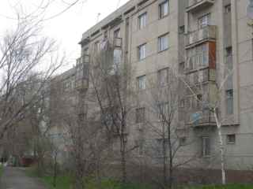

Left Tulsa Friday. Dallas, then Germany, a night in a hotel next to the airport with 40 other contractors, then the rotator flight with a fuel stop I'm not supposed to name. If you've ever flown sideways-facing in a cargo plane with a sack lunch for nine hours, you know. If you haven't, don't.
Landed at Talas Air Base around 2 in the afternoon local time. The base is about 7 miles west of town on flat ground by the river. You come out the back of the plane and the first thing you see is MOUNTAINS. Big ones, to the south, snow on top, in August. It was 96 degrees on the tarmac. Snow on the mountains. My brain could not make those two things go together.
The base housing is full (they're building more), so the company puts some of us in apartments in town. Mine is in a five-story concrete block left over from the Soviets, 3rd floor, no elevator, a balcony full of the last guy's empty bottles. Hot water "usually". Radiators the size of a pickup bed. There are about thirty of these buildings in a row, all the same, and the only way I could find mine the first night was the blue Lada parked out front with no wheels on it.

MONEY. I was worried about this. Turns out to be the easiest money in the world. You can pay for anything in US dollars. They also have their own money, the som, and it's fixed at 5 som to the dollar. Not "about" 5. FIVE. Has been since '93, a guy told me. So a 10 som note is 2 bucks, done. No exchange booths ripping you off like in Germany. The som has little coins too called tyiyn, 100 to a som, which are worth nothing and which I now have about a pound of in my pocket.
Prices: Big round flat bread, about 1 som (20 cents). Lunch in a cafe with soup, bread, and tea, maybe 12 som. A cab across town, 10 to 15 som if you agree first. A cold Coke, $1, in dollars, because it's an "import". A pack of American cigarettes, more than at home.
The bank here is called Talasbank. They will happily take your dollars. They are less happy to give them back but it can be done.
First day on the job (orientation mostly, see the ground rules, I'm not writing about it). Met my local crew. We have Americans running things and the hands are mostly local. Two guys I'll be with a lot:
Ulan, 26, from a village up the valley. Speaks Iradi at home, pretty good English (he learned it from the Marines in '92, he says, and from cassette tapes before that), and Russian when he has to. Very quiet, very sharp. Rides a horse to his mother's on Sundays.
Sergei, 50ish, an electrician from Nurzhan, the oil city up north. He calls it Kobozev half the time, which is what it was called under the Soviets, and Ulan corrects him every time, and Sergei says "yes yes Nurzhan" and keeps doing it. Sergei speaks Russian. That's it. Maybe 40 words of English and fewer of Iradi. He's lived here his whole life.
That surprised me. I figured everybody here spoke the local language. Not so. In town, especially with the older folks and anybody who worked in a factory or an office under the Soviets, it's Russian. The Iradi speakers are more country people and church people. English is official now (so is Iradi, Russian got dropped in '92), so all the government signs are in English and Iradi. But the menus are in Russian. And the Iradi on the signs is in the alphabet I can read, the Roman one, except some old shop signs are still in the Russian letters. So you have three languages and two alphabets on one street corner, and me in the middle with my phrase book open to the wrong page.
Ulan and Sergei talk to each other in Russian. Ulan talks to me in English. Sergei talks to me in Russian anyway, louder. We get along fine.